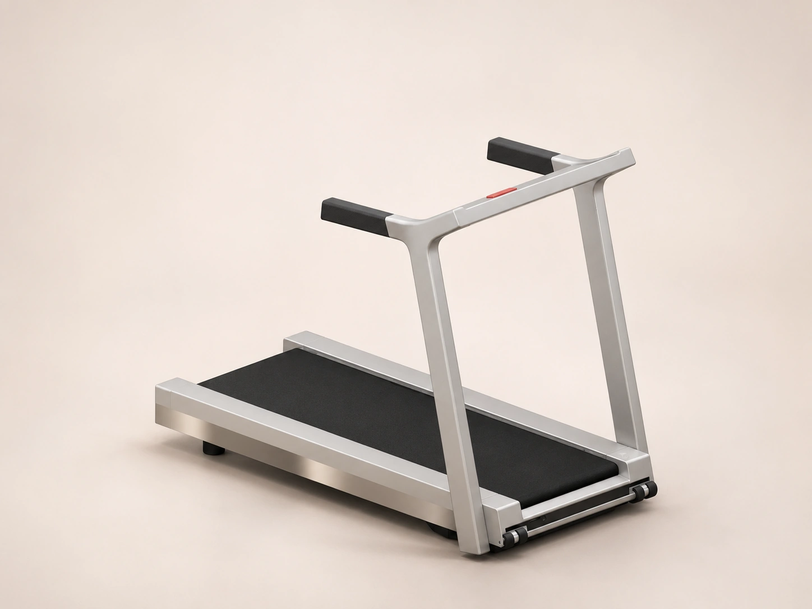
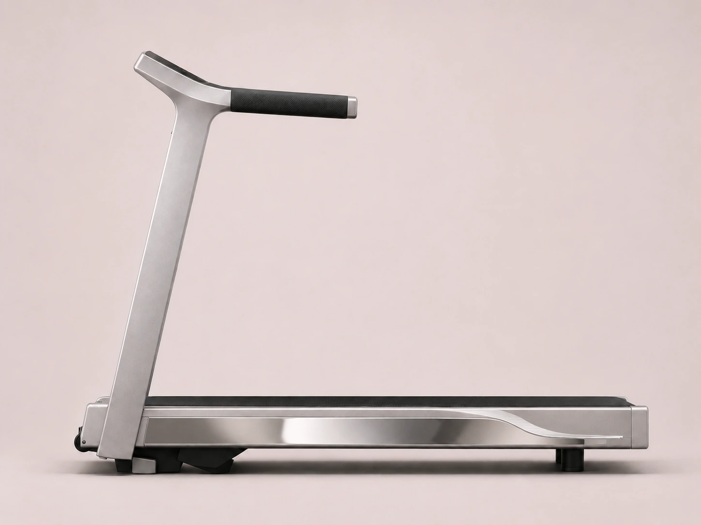
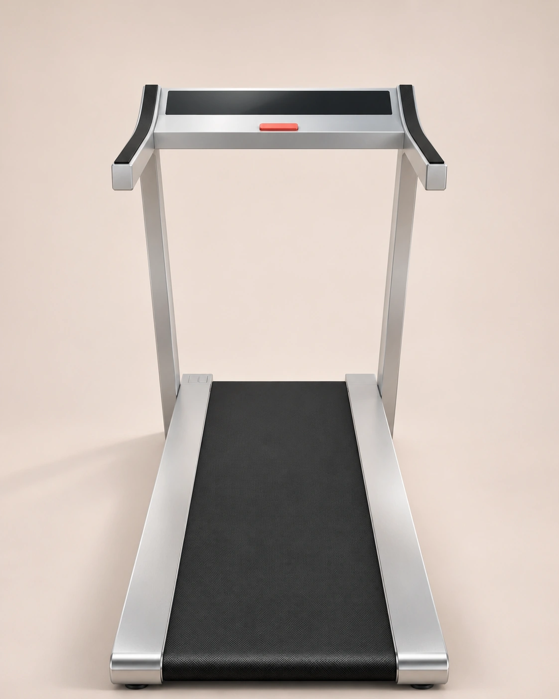

<!doctype html><html lang="zh-CN"><meta charset="utf-8"><meta name="viewport" content="width=device-width,initial-scale=1"><title>凌序 · 五个指定视角</title><style>*{box-sizing:border-box}body{margin:0;background:#f3efeb;color:#34352f;font:16px/1.6 -apple-system,BlinkMacSystemFont,"PingFang SC",sans-serif}main{max-width:1900px;margin:auto;padding:32px}h1{font-weight:500;font-size:30px;margin:5px 0}small,p{color:#77766c}.cards{display:grid;grid-template-columns:repeat(2,minmax(0,1fr));gap:24px}figure{margin:0;background:#e5deda;border:1px solid #ddd5ce}img{display:block;width:100%;height:auto}figcaption{padding:12px 16px;font-size:16px}a{color:inherit;text-underline-offset:4px}.portrait{max-width:700px;grid-column:1/-1;justify-self:center}.links{display:flex;gap:24px;flex-wrap:wrap;margin:24px 0}.status{font-size:13px;color:#777;padding-bottom:16px}dialog{padding:10px;max-width:96vw;max-height:96vh;border:0;background:#f3efeb}dialog img{max-height:89vh;width:auto;max-width:92vw;object-fit:contain}dialog::backdrop{background:#222c}button{font:inherit;border:0;background:none;cursor:pointer;padding:0;width:100%}#close{width:auto;display:block;padding:5px 14px;margin-left:auto}@media(max-width:700px){main{padding:18px}.cards{grid-template-columns:1fr}.portrait{grid-column:auto}h1{font-size:25px}}</style><main><small>LINEAR / FIVE VIEWS</small><h1>凌序 · 五个指定视角</h1><p>45°、左前45°＋人物、正左侧、右前45°＋人物、跑台后端朝屏幕视角。</p><div class="status">新生成 · 待用户评审 ｜ 新STEP外形基准，B细网格硅胶材质示例；其他把手与转角Options保留。</div><section class="cards"><figure id="01-45" class="landscape"><button data-image="01-45.webp" aria-label="放大45°"></button><figcaption>01 · 45°</figcaption></figure><figure id="02-left45-person" class="landscape"><button data-image="02-left45-person.webp" aria-label="放大左前45° + 人物"></button><figcaption>02 · 左前45° + 人物</figcaption></figure><figure id="03-left-side" class="landscape"><button data-image="03-left-side.webp" aria-label="放大正左侧"></button><figcaption>03 · 正左侧</figcaption></figure><figure id="04-right45-person" class="landscape"><button data-image="04-right45-person.webp" aria-label="放大右前45° + 人物"></button><figcaption>04 · 右前45° + 人物</figcaption></figure><figure id="05-runner-view" class="portrait"><button data-image="05-runner-view.webp" aria-label="放大跑台后端朝屏幕视角"></button><figcaption>05 · 跑台后端朝屏幕视角</figcaption></figure></section><nav class="links"><a href="overview.webp" target="_blank">五图总览 ↗</a><a href="../linear-fold-r2-20261115/viewer.html?rev=compact-fold-20261115b">模型与折叠动作 ↗</a><a href="../#linear">返回主评审 ↗</a></nav></main><dialog><button id="close">关闭 ×</button></dialog><script>const d=document.querySelector('dialog');document.querySelectorAll('[data-image]').forEach(b=>b.onclick=()=>{d.querySelector('img').src=b.dataset.image;d.showModal()});document.getElementById('close').onclick=()=>d.close();d.onclick=e=>{if(e.target===d)d.close()};</script></html>